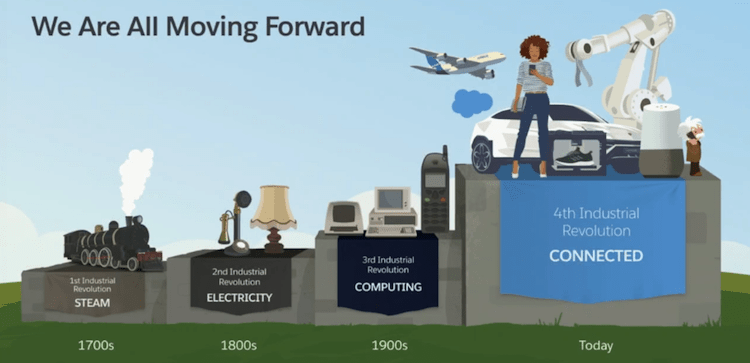
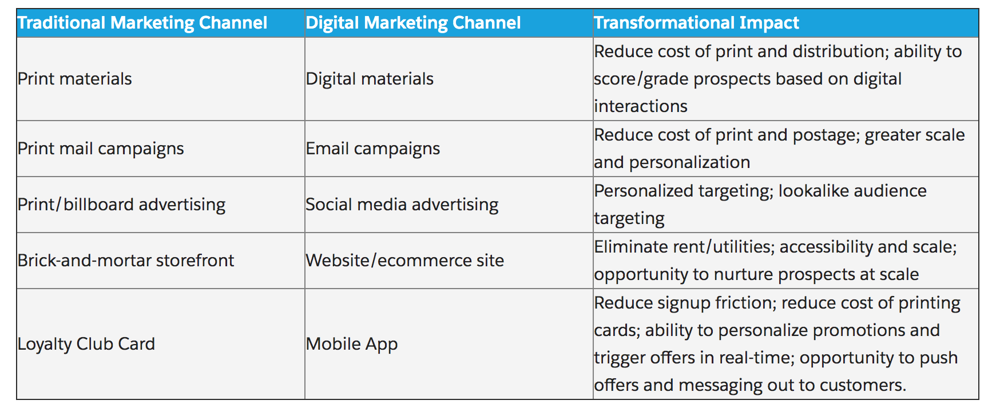
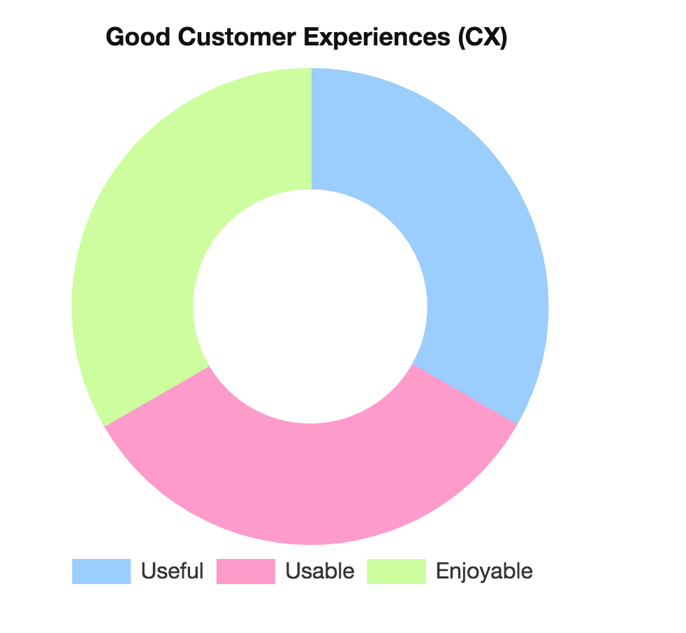
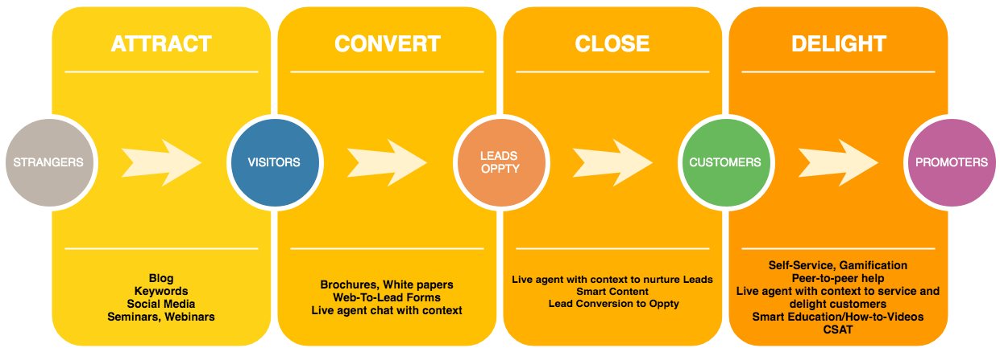
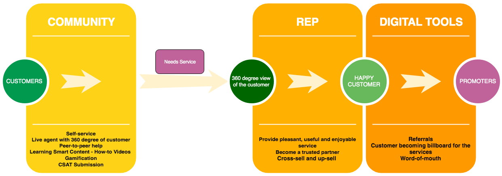
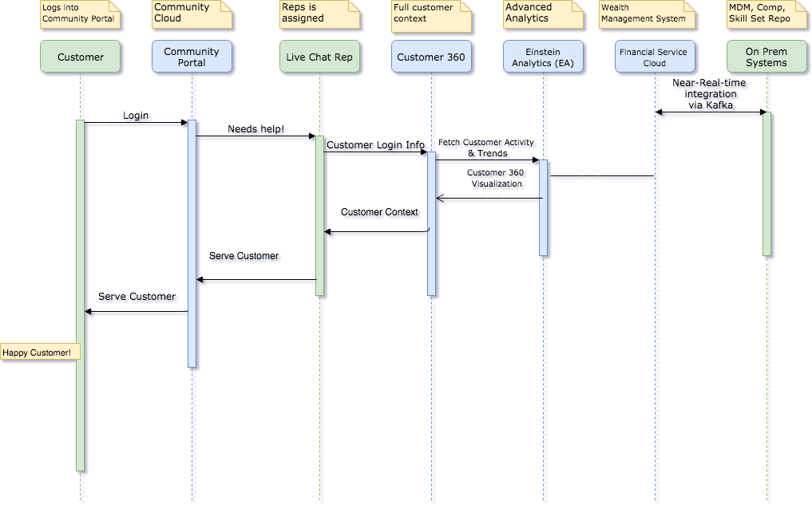

- Today’s customers are more tech-savvy and their expectations are different.
- They demand a new commitment to Customer Experience (CX) and game-changing innovations in Financial Services.
- Half of the world’s population will be digital natives by 2020 and they have never lived in a non-digital world.
- Each connected customer owns around 3 connected devices on average.
- It is estimated that US adults will spend around 3 hours a day using a mobile device this year.
- Their financial services experiences shouldn’t force them to relive their parents’ non-digital world.
- They expect gamification for the learning and engagement that makes financial services activities more fun.
- They expect more relevant, engaging, welcoming and effective digital experiences
Preparing for the fourth industrial revolution

- Customer Experience (CX)
- Special support for the connected customers
- Operational efficiency
- Profitability
Digital Transformation - reimagining of business in the digital age
-
The process of using digital technologies to create new or modify existing
- Business processes
- Culture
- Customer experiences (CX)
Digitization - converting information from analog to digital
- From papers & binders, xeroxes, and faxes to digital files
- But business systems and processes were largely designed around analog-era ideas about how to find, share, and use information.
Digitalization - using digital data to simplify the work.
- Using digitized information to make established ways to work simpler and more efficient
- Your data is instantly accessible and not trapped in a file cabinet.
- Customer records easily and quickly retrievable via computer
- Searching paper ledgers was replaced by entering a few keystrokes on a computer screen or mobile device
- New ways needed: not just to do the old things faster → digital transformation
Digital transformation - adds value to every customer interaction
- Revisit everything we do, from internal systems to customer interactions both online and in person.
- Change our processes in a way that will enable better decision-making, game-changing efficiencies, or a better customer experience (CX) with more personalization?
- Gather insights into customer buying habits and preferences to provide better customer experience (CX).
- Meet customers on their platforms of choice instead of they come find you. Adapt your service offerings to the customer's platforms of choice.
Customer Happiness - how you win in business
- Customer expectations are being driven by largely digital technology and digital innovations.
- Customers are connected 24/7, and increasingly want and expect that same around-the-clock access to the companies they do business with.
- Connected customer is always seeing new possibilities. When they see new things elsewhere, they want them from you, too. And if you can’t offer them, they’ll find someone else who can.
- The digitally connected world makes it easier than ever for customers to do comparisons - shop and move from one brand to another, often with minimal effort.
- Harvard Business Review: 73% of customers prefer to do business with brands that personalize their shopping experience
Digital transformation in Marketing - find more customers while spending less money
- Good digital marketing generates more quality leads and helps you get closer to all of your customers.
- Opens the door to marketing automation, analytics tracking, and dialogue with customers in ways that analog never could.
- Can build 1-to-1 journeys (instead of one-size-fits-all) that observe customer behaviors and shape the experience along the way to best suit each individual buyer.
- Craft those journeys with data-driven insights.
Marketing Changes

Components of Good CX

Strangers to your Customers and Promoters

Effects of Good Customer Experience

Customer 360 - Data-driven Personalization
Good Customer Experience - Customer Success
